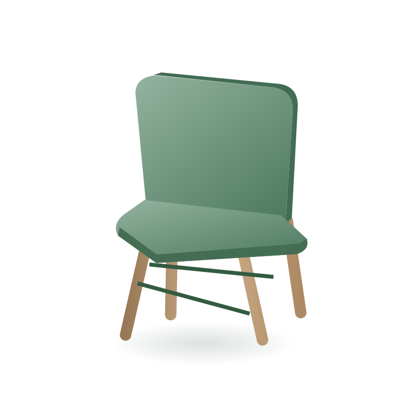

Circular por natureza
Outra vida.
O mesmo
objeto.
O que você não usa pode ser o próximo achado de alguém. Encontre, doe e troque. Faça circular.

Mova o mouse para inclinar. Arraste na horizontal para girar, mantendo a rolagem vertical. Use as setas para girar, Home para voltar, N para outro objeto e espaço para pausar. Os objetos desta cena são ilustrativos.
Um lugar para novas conversas.
Objeto ilustrativo · imagine uma nova históriaEncontre o seu próximo achado
Já existe. Pode ser seu.
Anúncios publicados pela comunidade. Fotos de quem conhece o objeto.
Um pequeno gesto. Um novo começo.
O melhor destino
é continuar
fazendo parte.
Uma cadeira, um livro, aquela peça esquecida. Sempre há alguém para continuar a história.
Encontre uma nova possibilidadeComeça com o que você tem.
Fotografe o objeto, conte sua história e publique. Seu anúncio pode ser o começo de algo bom.
Cada objeto conta
O que estamos
fazendo circular.
Atividade registrada nesta comunidade, sem estimativas ambientais.
- Anúncios publicados
- 0
- Objetos disponíveis
- 0
- Reutilizações confirmadas
- 0